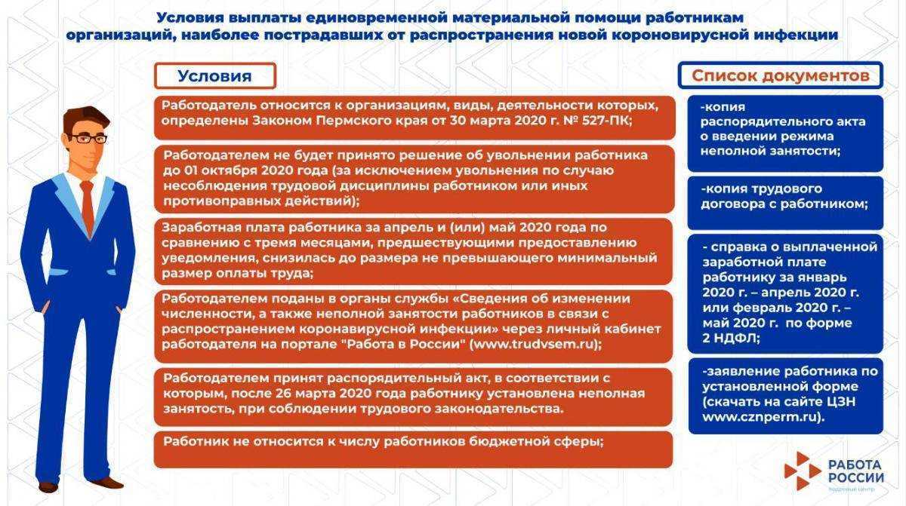

Эффективные стратегии минимизации налогов
1. Открытие и управление оффшорными компаниями
Одной из самых эффективных стратегий минимизации налогов является открытие и управление оффшорными компаниями. Оффшорные компании предоставляют уникальные возможности для снижения налоговой нагрузки благодаря налоговым льготам и привилегиям, предоставляемым в странах оффшорных зон.
Преимущества открытия оффшорных компаний:
- Снижение налоговой нагрузки
- Конфиденциальность и анонимность
- Гибкость управления и возможность международных операций
- Защита активов
2. Использование инвестиционных инструментов
Инвестиционные инструменты, такие как ценные бумаги, фонды и страховые полисы, могут быть использованы для минимизации налоговой нагрузки. Например, инвестиции в пенсионные фонды или страхование жизни могут предоставить налоговые льготы и снизить сумму налогов, подлежащих уплате.
3. Оптимизация бизнес-структуры
Оптимизация бизнес-структуры позволяет снизить налоговую нагрузку путем перераспределения прибыли, использования налоговых льгот и применения различных стратегий, таких как перенос активов или осуществление международных операций. Рекомендуется провести анализ текущей структуры компании с целью определения возможностей по оптимизации налогообложения.
4. Консультация специалистов
Для разработки эффективных стратегий минимизации налогов рекомендуется обратиться к профессиональным юристам и налоговым консультантам, которые обладают экспертизой в данной области. Консультанты помогут разработать индивидуальную стратегию минимизации налогов в соответствии с требованиями и целями вашей компании.
Получение консультаций и помощь юриста
Нужна помощь профессионала в сфере юриспруденции? Хотите минимизировать налоговую нагрузку и получить консультации налогового юриста? Тогда наша услуга — именно то, что вам нужно!
Преимущества нашей услуги
- Опытные юристы, специализирующиеся в области налогового права
- Индивидуальный подход к каждому клиенту
- Конфиденциальность полученной информации
- Реальная помощь в минимизации налоговой нагрузки
- Быстрая и качественная консультация по вашему вопросу
Услуги, которые мы предлагаем

- Консультации по налоговому праву;
- Подготовка и проверка документов, связанных с налоговыми вопросами;
- Составление и анализ договоров с учетом налоговых аспектов;
- Разработка налоговых стратегий и планирование;
- Представление интересов клиента в налоговых органах и суде.